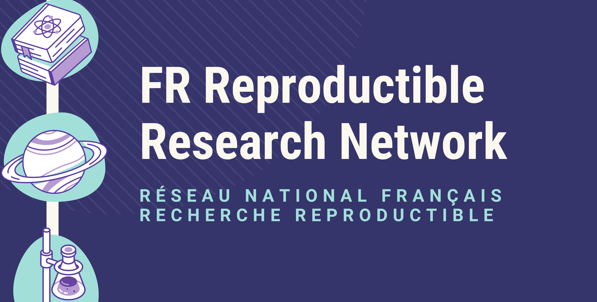
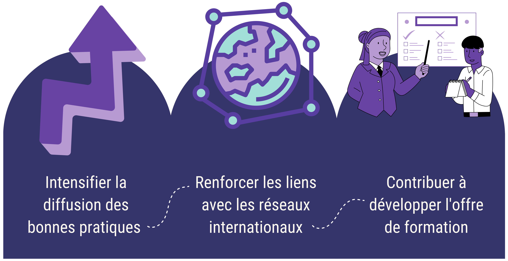

Bienvenue sur le réseau de la recherche reproductible
Pour un chercheur, il n’y a rien de plus frustrant que l’impossibilité de reproduire des résultats majeurs obtenus quelques mois auparavant. Les causes de ce type de déconvenues sont multiples et parfois pernicieuses. Ce phénomène participe à ce que certains identifient comme une “crise de la reproductibilité de la recherche”. — Vers une recherche reproductible, Desquilbet et al., 2019.

Le Réseau Français de la Recherche Reproductible est une initiative nationale informelle rassemblant des scientifiques engagés dans l’étude des facteurs favorisant la reproductibilité de la recherche. Bien que les enjeux de la reproductibilité varient selon les disciplines, ils concernent l’ensemble des domaines scientifiques. Le réseau s’attache ainsi à représenter une diversité disciplinaire riche et équilibrée.
Objectifs du réseau

Le réseau compte environ 260 membres inscrits à sa liste de diffusion, l’abonnement à celle-ci constituant actuellement le principal critère d’adhésion. Les membres occupent des fonctions variées et sont issus de nombreuses institutions réparties à travers le territoire français. Ainsi, au moins 30 disciplines différentes sont représentées. Cette diversité est un élément fondamental du réseau qui vise à promouvoir l’échange de bonnes pratiques et créer des discussions autour de procédures communes dans des disciplines différentes (voir la page Membres pour plus de détails).
Actions en cours

Structure
Pour atteindre ces objectifs, le réseau s’est doté d’une structure avec 3 types de composantes : un copil qui définit les axes prioritaires et coordonne les différentes actions, des collèges transverses (animation, relations européennes, relations institutionnelles) et enfin des groupes de travail sur des sujets spécifiques (formation, notebooks, gestion des environnements logiciels).
Activités
Journées annuelles
- Journées 2023, Paris
- Journées 2024, Grenoble
- Journées 2025, Lyon
Wébinaires
Le collège “Animation” organise des wébinaires réguliers sur des thèmes variés autour de la recherche reproductible. Vous pouvez retrouver la liste des wébinaires sur cette page.